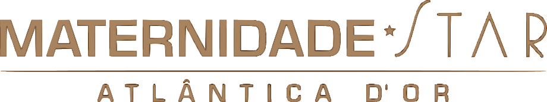
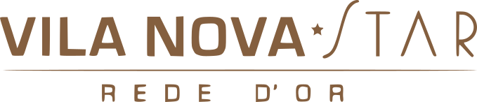

Sao Luiz Itaim · Vila Nova Star · Maternidade Star


14 Ago · 8h–16h30
15 Ago · 8h–15h15
Hospital Sao Luiz Itaim
Auditorio Terreo
Av. Santo Amaro, 722
Vila Nova Conceicao, SP
Gratuita
Vagas limitadas
Certificado incluso
Rede D'Or — Regional Sul
Sao Luiz Itaim
Vila Nova Star
Maternidade Star
Dois dias de conteudo com especialistas em prevencao de IRAS e stewardship.
Evento gratuito. Vagas limitadas. Garanta sua presenca.